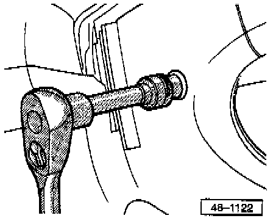

Airbag Unit, Removing & Installing
Airbag unit, removing and installingRemoving
CAUTION: On vehicles equipped with an anti-theft radio, obtain the correct radio activation code before disconnecting battery
- Disconnect battery Ground (GND) strap.
- Center steering wheel (straight-ahead position)

- Remove both socket head screws for airbag unit.
- Always replace
- Tightening torque: 6.5 Nm (58 in lb)
- Remove airbag unit from steering wheel and disconnect wiring harness connector from the airbag unit
Installing
- Install in reverse order of removal
- After installing airbag unit first switch ignition ON, then connect battery Ground (GND) strap.
WARNING: Make sure that no one is in the vehicle when reconnecting the battery Ground (GND) strap.